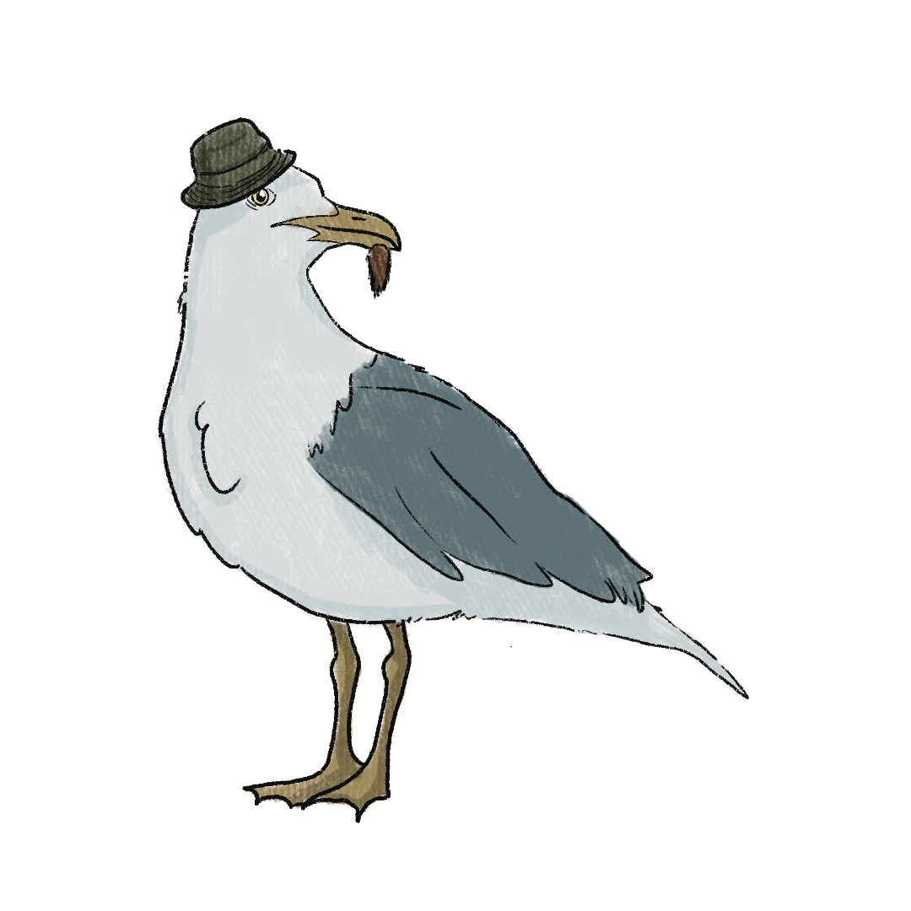

After a long time of searching for food. The Seagull has resulted to steal food
from humans. As fish in the sea seem to be disappearing, The seagull
is having difficulty finding fish to eat, making him sad as days go by.
As he is flying away with the food he took.
He noticed that there is something off about the environment that day.
The ocean is darker, and the sand is dirtier. Details like this gets the Seagulls
attention. The Seagull decides to pay a visit to another animals, to find out
what exactly is going on in the environment. The Seagull goes around
meeting up with various animals in the Santa Cruz and Monterey bay.
Seagull is aware that there is something odd going on with the ocean,
as many animals are acting weird and different from their usual self.
Seagull learns by each visit that something is happening with
the ocean and climate change.
Seagull visits Sea Lions, but noticed that sea lion isn't feeling well.
Steven Seagull
"Hi there is sea lion!""
Sea Lion
(sadly) "Hi there seagull"
Steven Seagull
"What's wrong, sea lion you look upset?"
Sea Lion
"I know I'm not having a good day myself"
Steven Seagull
"Why is that?"
Sea Lion
"It's really hard for me to feed right now. I've noticed that most sea lions
who tend to eat fish are getting sick lately. I'm afraid to be one of them too."
Steven Seagull
"What do you mean sick? What's going on?"
Sea Lion
"I don't know how to explain it.. But a few sea lions have been
going on a frenzy when they eat some fish or any contaminated food."
Steven Seagull Asks:
A. "Why do you think that's happening right now?"
B. "Is that why you look sad?"
Sea Lion
"Mother said it had to do with the domoic acid. If our food gets contaminated,
we can sick and go on an aggressive frenzy."
Steven Seagull
"Is that why you're hanging out by yourself?"
Sea Lion
"That's one of the reasons why I am hanging out by myself.
I'm afraid to do anything wrong and be sick just like my brothers and sisters."
Steven Seagull
"What are you gonna do?"
Sea Lion
"I don't know I'm afraid to eat. At the same time I'm hungry. What can I do?"
Sea Lion
"Mother warned me about being careful on what to eat.
Our food can be contaminated with domoic acid."
Steven Seagull Asks:
A. "What does domoic acid do to you?"
B. "What if you find food at another region? "
Sea Lion
"Mother says that domoic acid can cause disorientation, confusion,
heart failure, brain damage, and seizures."
Steven Seagull
"Oh wow, that's bad. I understand why you are scared."
Sea Lion
"You know very well that my mother won't let me anywhere outside the Wharf."
Seagull
"That's right! You are not allowed to leave the area at all."
Sea Lion
"Exactly. That is why it's hard for me to find food to eat."
Steven Seagull Asks:
"Do you need help finding food?"
"How are you going to get food?"
Steven Seagull Asks:
"How are you going to get food?"
"Since you are afraid of eating, how about I do a little digging about this
climate change problem?"
Sea Lion
"I do. But I don't know where to begin."
Steven Seagull
"How about I find out a bit more about this domoic acid, and see if there is a
safe place you get find safe food?"
Sea Lion
"You would do that? That would be great!"
Sea Lion
"Of course! See you later Sea Lion!"
Sea Lion
"I'll be careful and stay on the areas where I see my family eating. I might not
eat much, but I'll be cautious!"
Steven Seagull
"Okay then! Be careful Sea Lion. I will try and find information on this
climate change problem. Hopefully I get to share the tea later."
Sea Lion
"That's great! If you can find information, that would be great."
Steven Seagull
"Of course! I'll visit a few friends and figure out what's going on with the ocean."
Steven the Seagull spots something shiny while circling above, and
swoops down to investigate. A crab has lost one of their claws and
has been trapped in a crab capture net.
Steven Seagull
"Hey! What happened to your claw?"
Mrs.DungunessCrab
"Oh, I felt threatened when being captured, so it kind of.. fell off."
Steven Seagull
"oh.."
Steven Seagull Asks:
"...If you have no more use of that claw... Can I have it?"
"Oh! I didn't realize Dungeness Crabs could do that.."
Mrs.DungunessCrab
"That's morbid... But I don't have a use for it anymore so I guess."
Mrs.DungunessCrab
"Yeah, it grows back though."
Steven Seagull Asks:
"How did you get in here?"
Mrs.DungunessCrab
"Oh, I was just walking/hanging out with my kids (crab larvae),
when I got snatched up, and now I'm stuck in here."
Mrs.DungunessCrab
"I don't know how they're doing or if they'll survive without me."
Mrs.DungunessCrab
"The ocean is more acidic now, so their development is being stunted,
and even I can feel the acidity affecting my own shell."
Steven Seagull decides to:
Help free the crab from the net
Leave the crab in there
Mrs.DungunessCrab
"Thank you so much!"
Mrs.DungunessCrab
"Please! Come back!"
Steven Seagull goes in to land but stumbles almost falling beak first.
Steven Seagull
He decomposes himself.
"Ahem..."
The Elder Mussel
"Hey crazy bird! Careful! Careful! Watch my shell there now!"
Steven Seagull looks around for the source of the disgruntled voice, realizing
it's coming from beneath him. An elderly mussel stares right back up at
seagull. It's shell is weathered and brittle.
Steven Seagull chooses to:
A. Apologize and step to the side
Steven Seagull
He steps aside and begins to prep hus wings to fly off to another rocky ledge.
"Oops! My bad! didn't see ya there grandpa."
The Elder Mussel
Sighs.. He croaks:
"No no, come back. This old mussel could use someone new to talk to.
I didn't mean to make a fuss, but your bony feet were about to crack what's
left of my shell! It's getting thinner with every wave.
I can't take the weight like I used to..."
Steven Seagull chooses to:
A. Ask what's wrong with his shell
B. Complain about him calling your feet bony
Steven Seagull
"Like you used to? What's wrong with your shell?"
The Elder Mussel
"My shell is just too thin and I can't build it fast enough.
I spend all my energy just patching up holes, repairing what
the water eats away. In my grandmothers generation shells were
thick and smooth. Tough as a fortress.
Now, we build simply to try and see the next day through."
The mussel's eyes fall as he reminisces the stories of those who had come before.
Steven Seagull
"Hey now, leave my beautiful bony feet out of this now grandpa, do you know
how much a pedicure is worth these days?! I don't think these babies
are the problem."
The Elder Mussel
Stares at the seagull with an unimpressed face
"Well, you got one thing right. My shell is just too thin and I can't build it fast enough.
I spend all my energy just patching up holes, repairing what the water eats away. In my
grandmothersgeneration shells were thick and smooth. Tough as a fortress.Now, we build
simply to try and see the next day through."
The Elder Mussel
The mussel's eyes fall as he reminisces the stories of those who had come before.
The Elder Mussel
"You see, my boy...back in those days we used to build with aragonite."
The Elder Mussel
"Our shells were thick--strong. They shielded us from predators and held firm
against the pounding waves of the intertidal zone."
The Elder Mussel
"But the water...it's more acidic now."
The Elder Mussel
"It eats away at our shells easily. Many of us have turned to calcite instead."
The Elder Mussel
"It doesn't dissolve as quickly...but is not nearly as strong. It protects us just
enough to survive-until the tide grows rough, or the crabs grow hungry."
The Elder Mussel
"I'm the oldest mussel in this here bed. The youngsters don't get to see as
many days as I have in my time..."
Steven Seagull Asks:
A. Can't you just...move? Find water with...less acid?
B. That sounds terrible...
The Elder Mussel
"Move?"
The mussel sounds irritated.
"Steven. The moment I landed here as a youngin, that was it. This is my spot.
For life. I can't move. I can't escape."
The Elder Mussel
""Yes, we didn't choose this life for ourselves."
The Elder Mussel
"This is where I must stay for life. I can't move. I can't escape.""
Steven Seagull
Steven Seagull the Seagull asks abt what's happening in the ecosystem
